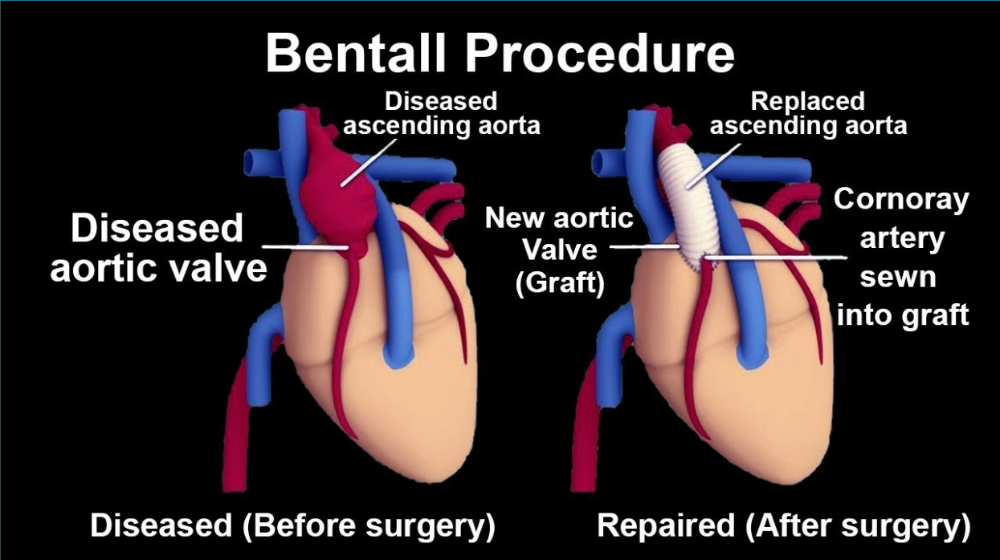

The Bentall procedure is a sophisticated surgical intervention designed to address complex issues involving the aorta, the largest artery in the human body. The aorta is responsible for transporting oxygen-rich blood from the heart to various organs and tissues. When there are significant abnormalities or weaknesses in the aorta, it can lead to serious health complications.
During a Bentall procedure, the damaged portion of the aorta is meticulously removed. This typically includes the aortic valve and the section of the aorta adjacent to it. Following the removal, a graft, usually made of a synthetic material like Dacron, is used to replace the excised segment. Additionally, a mechanical or biological valve is implanted within the graft to facilitate proper blood flow and prevent backflow.
The Bentall procedure is an innovative and effective approach that addresses both aortic root and valve issues simultaneously. It's often employed in cases of aortic aneurysms, dissections, or other structural abnormalities. This surgical technique not only restores normal blood flow but also safeguards against potential complications associated with a weakened aorta.
By undergoing a Bentall procedure, individuals with aortic conditions can experience a significant improvement in their overall cardiac health, ultimately leading to a better quality of life. This procedure stands as a testament to modern surgical advancements in cardiovascular medicine.

How is the Procedure Performed?
The Bentall procedure is a highly specialized surgical technique employed to address complex issues in the aorta and aortic valves. It begins with a meticulous incision along the chest, allowing access to the heart and aorta. The affected portion of the aorta, along with the aortic valves, is carefully excised.
Next, the coronary arteries, responsible for supplying blood to the heart muscle, are detached from the diseased aorta. This step is crucial to ensure uninterrupted blood flow to the heart.
Subsequently, an artificial composite graft, typically constructed from a durable material like Dacron, is precisely positioned. This graft serves as a replacement for the removed section of the aorta. It also incorporates a mechanical or biological valve, which regulates blood flow in a manner akin to natural aortic valves.
The previously detached coronary arteries are then meticulously reattached to the graft. This step reestablishes the vital blood supply to the heart muscle.
The Bentall procedure exemplifies the pinnacle of cardiovascular surgical expertise, effectively resolving complex aortic and valve conditions. It ensures proper blood circulation, safeguarding against potential complications associated with a weakened aorta. This innovative technique has significantly improved outcomes for patients with aortic disorders.
Who is the Right Doctor for Valve Replacement?
The right doctor to consult for Bentall Surgery is a Cardiac Surgeon.
What is the Usual Success Rate for this Procedure?
The success rate of a Bentall procedure hinges largely on the patient's age and overall health. In cases where the patient is relatively young and in good overall health, the procedure tends to have a higher success rate. Younger patients often have greater physiological resilience, which can contribute to smoother recovery and better long-term outcomes.
Conversely, older patients or those with pre-existing health conditions may face a slightly higher degree of risk during and after the procedure. Their age-related factors, such as reduced physiological reserves and potential comorbidities, can impact the overall success rate.
It's important to note that advances in medical technology and surgical techniques have significantly improved the success rates of the Bentall procedure across all age groups. Additionally, meticulous pre-operative assessments and post-operative care play a crucial role in optimizing outcomes, regardless of the patient's age. Overall, with proper patient selection and expert surgical execution, the Bentall procedure stands as an effective intervention for addressing complex aortic and valve issues.
What is included in the cost of Valve Replacement?
The cost of a Bentall Procedure typically encompasses several components- Surgical Fees
- Hospital Charges
- Medical Supplies and Implants
- Pre-operative Testing
- Post-operative Care
- Follow-up Appointments
Cost related to Angiography
| Treatment name | Cost range |
|---|---|
| Bentall procedure | Rs.313020 to Rs.417360 |
| Aortic Valve replacement - Mechanical Valve | Rs.355200 to Rs.473600 |
| Aortic Valve replacement - Tissue Valve | Rs.253080 to Rs.337440 |